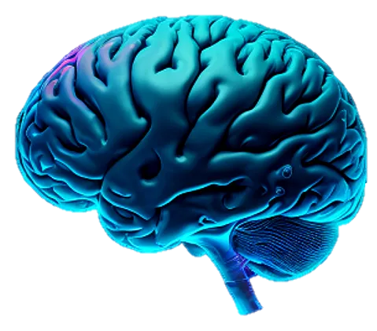
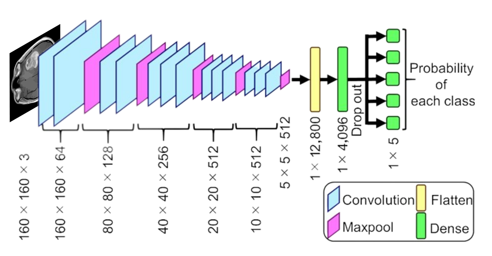

Learn More TumourTrack
TumourTrack is an AI tool that uses deep learning to detect
the presence of brain tumours. Trained with a 3000-image
dataset it can provide an accurate diagnosis within seconds.
This tool uses a neural network model to detect brain tumours from MRI images. There is a given dataset with two classes of images: those with brain tumours and those without. The images are loaded and processed to a uniform size of 64x64 pixels. The dataset is then split into training and testing sets, the pixel values of the images are normalized and the labels are converted to one-hot encoded vectors. The model architecture includes several convolutional layers with max pooling, a fully connected layer with dropout, and a final output layer with a softmax activation function. The model is compiled with various optimizers and accuracy is used as the evaluation metric. After being trained for 10 epochs, with a batch size of 16, the model is saved to a file which is used to make decisions on new images. A model.predict function obtains the class probabilities for the input image and an np.argmax function is applied to this to predict class label (yes tumour detected/no tumour detected). Finally, this predicted class label is sent to the front end for the user to see the result.
Machine learning is becoming increasingly prevalent in healthcare due to the ability to analyze and interpret vast amounts of patient data, leading to more accurate and timely diagnoses. Traditional diagnostic methods are often subjective, time-consuming, and error-prone, but machine learning can expedite this by processing large amounts of data quickly and objectively, providing precise diagnoses and treatment recommendations based on patient-specific information. In addition to improving diagnosis, machine learning models can also help identify patterns and trends in patient data, leading to more effective treatments and prevention strategies. The use of machine learning in healthcare has the potential to save lives, improve patient outcomes, and reduce healthcare costs, making it a vital area of development in the medical field.